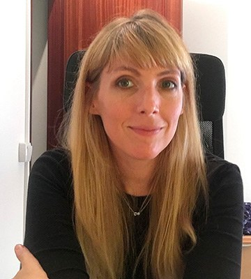

|
I am a senior researcher at the Computer Science Department of UPC. I am also the co-founder of dMetrics. I am currently leading the ERC founded project INTERACT My research is in Machine Learning and Natural Language Processing. I am interested in spectral learning of grammars and automata and interactive learning methods. For more details, check my webpage. |
 |